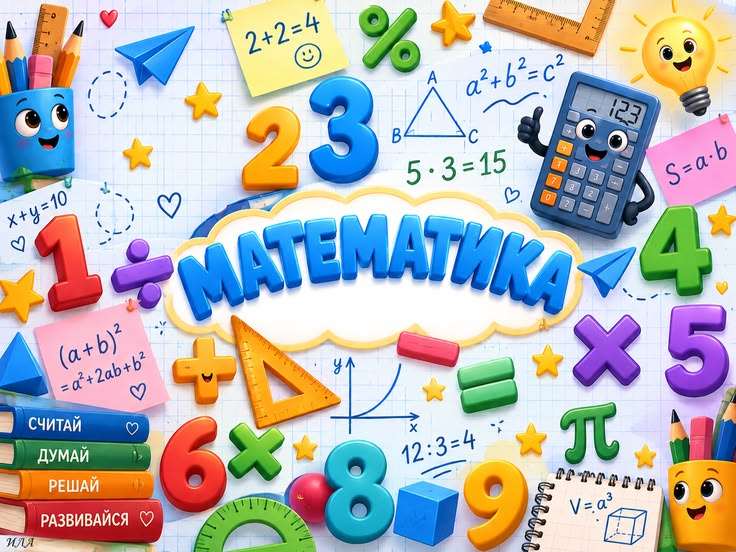
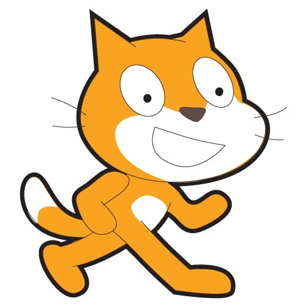
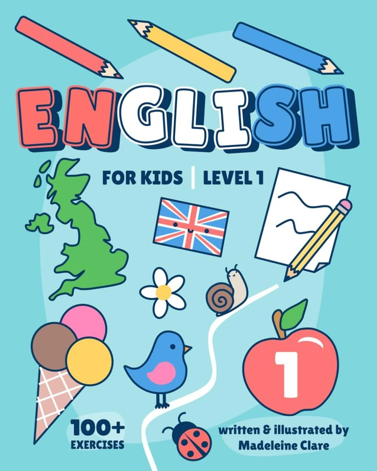
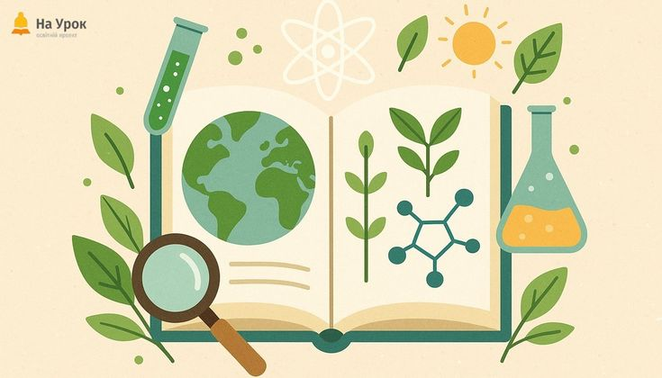
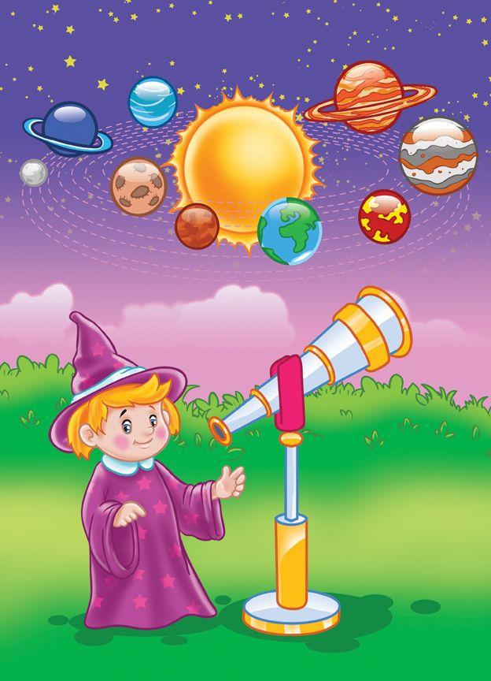

Каталог навчальних курсів для малечі та школярів
Оберіть захоплюючий напрямок для вашої дитини. Кожен курс розроблено у формі інтерактивних завдань та ігор.
Доступно курсів: 5
1. Курс: «Пригоди Веселого Рахівничка»

Ілюстративне фото: Інтерактивна арифметика та геометричні форми
Назви уроків:
- Урок 1: Знайомство з цифрами від 1 до 10 у казковому лісі.
- Урок 2: Порівнюємо предмети: хто більший, а що важче?
- Урок 3: Чарівні фігури навколо нас (коло, квадрат, трикутник).
- Урок 4: Додавання та віднімання разом із лісовими звірятами.
Тип завдань: Міні-ігри «перетягни предмет», математичні лабіринти, аудіо-загадки з лічби.
Докладніше про тему
2. Курс: «Юний кодер у світі Scratch»

Ілюстративне фото: Блочне програмування персонажів
Назви уроків:
- Урок 1: Перше знайомство з котиком Скретчем і сценою дій.
- Урок 2: Вчимо героя ходити та танцювати: лінійні алгоритми та цикли.
- Урок 3: Створення власної гри «Злови яблуко у кошик».
- Урок 4: Озвучування героїв та нарахування ігрових очок.
Тип завдань: Збирання пазлів із блоків коду, пошук помилок у готових програмах, створення власного міні-мультфільму.
Докладніше про тему
3. Курс: «English ABC: Перші слова англійською»

Ілюстративне фото: Весела абетка та базові слова
Назви уроків:
- Урок 1: Співаємо абетку (The ABC Song) та вчимо звуки.
- Урок 2: Світ тварин: свійські улюбленці та дикі хижаки.
- Урок 3: Яскрава палітра кольорів та назви іграшок.
- Урок 4: Моя родина і чарівні слова ввічливості.
Тип завдань: Аудіотренування вимови, картки-перевертні (flashcards), вікторини на відповідність картинки й аудіо.
Докладніше про тему
4. Курс: «Маленький натураліст: Таємниці природи»

Ілюстративне фото: Дослідження рослин і тварин нашої планети
Назви уроків:
- Урок 1: Чому листя змінює колір та як з'являється дощ?
- Урок 2: Підводний світ коралових рифів та морські велетні.
- Урок 3: Дивовижні рослини та комахи-помічники в природі.
- Урок 4: Сортування сміття: як стати супергероєм довкілля.
Тип завдань: Інтерактивні фото-квести, екологічні сортувальні ігри, перегляд коротких пізнавальних роликів.
Докладніше про тему
5. Курс: «Космічні мандри Сонячною системою»

Ілюстративне фото: Планети та сузір'я
Назви уроків:
- Урок 1: Палаюче Сонце та його вірні супутники.
- Урок 2: Земля і таємничий супутник Місяць.
- Урок 3: Червоний Марс та планети-гіганти з газовими кільцями.
- Урок 4: Один день на Міжнародній космічній станції (МКС).
Тип завдань: 3D-мандрівка планетами, складання ракети з деталей, тестування на отримання бейджа «Юний космонавт».
Докладніше про тему